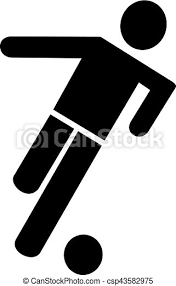
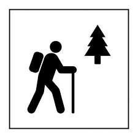
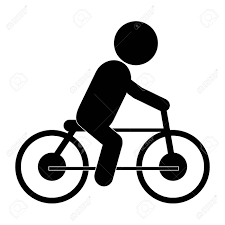
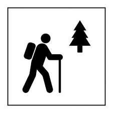
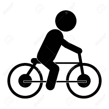

A propos de moi
Je me présente Jérôme , j'ai 33ans je suis marié père de 2 enfants de 2 et 6 ans. J'habite sur le bassin d'Arcachon en Gironde. Je suis plutôt quelqu'un de perfectionniste,minutieux,sérieux, autonome et persévèrent. J'ai le goût du challenge et je souhaite aujourd'hui, relever un nouveau défi. Reprendre le chemin de l'école, me former au métier de Développeur Web et exercer ce nouveau métier.
Mes motivations
Au delà du challenge, ce qui me motive, c'est la soif d'apprendre. C'est d'ailleurs une des bases du métier de pâtissier, il faut toujours être à l’affût de la nouveauté, s’entraîner, toujours se réinventer. Durant un stage d'immersion en service informatique, j'ai découvert le codage. Je dois avouer que j'ai tout de suite été conquis! Piqué au vif, ma curiosité m'a amené à approfondir le sujet. Pour développer cette page internet, j'ai recherché des techniques de langage HTML et CSS, et cela confirme mon envie de continuer et de me perfectionner en intégrant votre formation. L'activité et son rythme de travail me permettront d'avoir du temps pour profiter de ma vie de famille. C'est donc une nouvelle vie qui s'offre à moi.
Mon parcours professionnel
Pâtissier de formation, j'ai exercé pendant 15 ans dans le métier. Je peux dire aujourd’hui'hui que la pâtisserie n'a plus de secret pour moi. J'ai développé mes compétences sur différents postes de travail dans la réalisation de pâtisserie, au tourage, en chocolaterie et en glacerie. J'avais deux envies en sortant de l'école, à ce moment là la pâtisserie a prit le dessus. Aujourd'hui j'ai envie de revenir sur une de mes premières passions; l'informatique.
Ma formation
Titulaire d'un BEP Pâtissier,Tourier,Glacier,Chocolatier et Confiseur depuis 2007 j'ai toujours exercé dans le secteur. Je suis également formé à l'hygiène et à la sécurité. J'ai aussi obtenu mon Certificat de Prévention et Secours Civiques de niveau 1. Pour valider mon projet professionnel, j'ai réalisé un stage d'immersion au sein d'un service informatique d'une société de production de e-liquide. J'ai échangé avec différents professionnels comme l' Administrateur Réseaux, le Technicien d'Assistance en Informatique et le Développeur Web.
MES CENTRES D'INTERÊT
 



Jeux Vidéo
Football
Série TV
Musique
Marche à pied
Vélo
CONTACT
ADRESSE
10 Rue de l'Or
Gujan-Mestras
33470
TELEPHONE
06.45.32.89.66
RESEAUX SOCIAUX